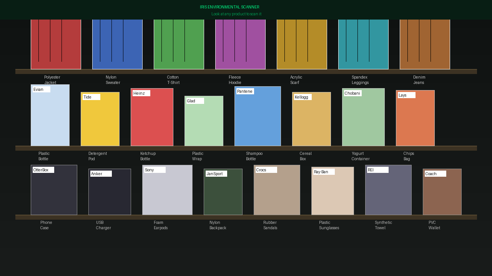

Iris
Environmental Scanner

Environmental Scanner
Iris continuously monitors your surroundings — air quality, light, and sound — translating the invisible into a clear, living picture of your environment.
On-device machine learning cross-references sensor streams in milliseconds, surfacing anomalies and patterns before they escalate into problems.
Contextual notifications reach you only when they matter — calibrated to your space, your routine, and your personal sensitivity thresholds.
